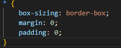
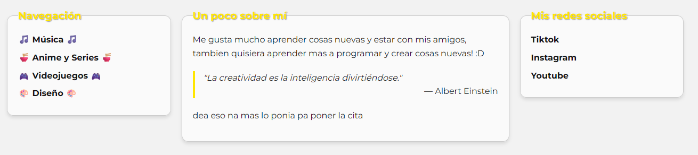
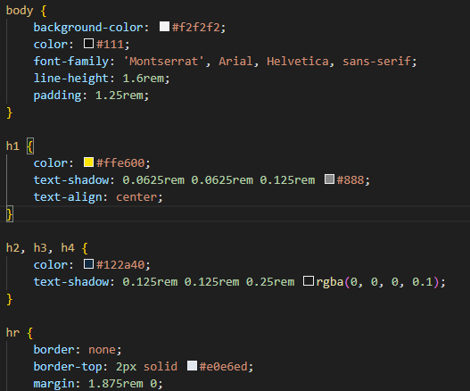

Selector Universal
El selector universal (*) selecciona todos los elementos en el documento HTML. En este caso, se utiliza para aplicar un modelo de caja consistente (box-sizing: border-box) y eliminar los márgenes y rellenos predeterminados de todos los elementos. Esto asegura que el diseño sea más predecible y uniforme en toda la página.
Codigo:

Selector de Tipo
Los selectores de tipo se utilizan para aplicar estilos a todos los elementos de un tipo específico, como body, h1, p, etc. En este caso, se han definido estilos base para el cuerpo del documento (body), encabezados (h1, h2, h3, h4) y enlaces (a). Estos estilos incluyen colores, fuentes, márgenes y otros atributos que afectan la apariencia general de estos elementos en la página.

Codigo:
